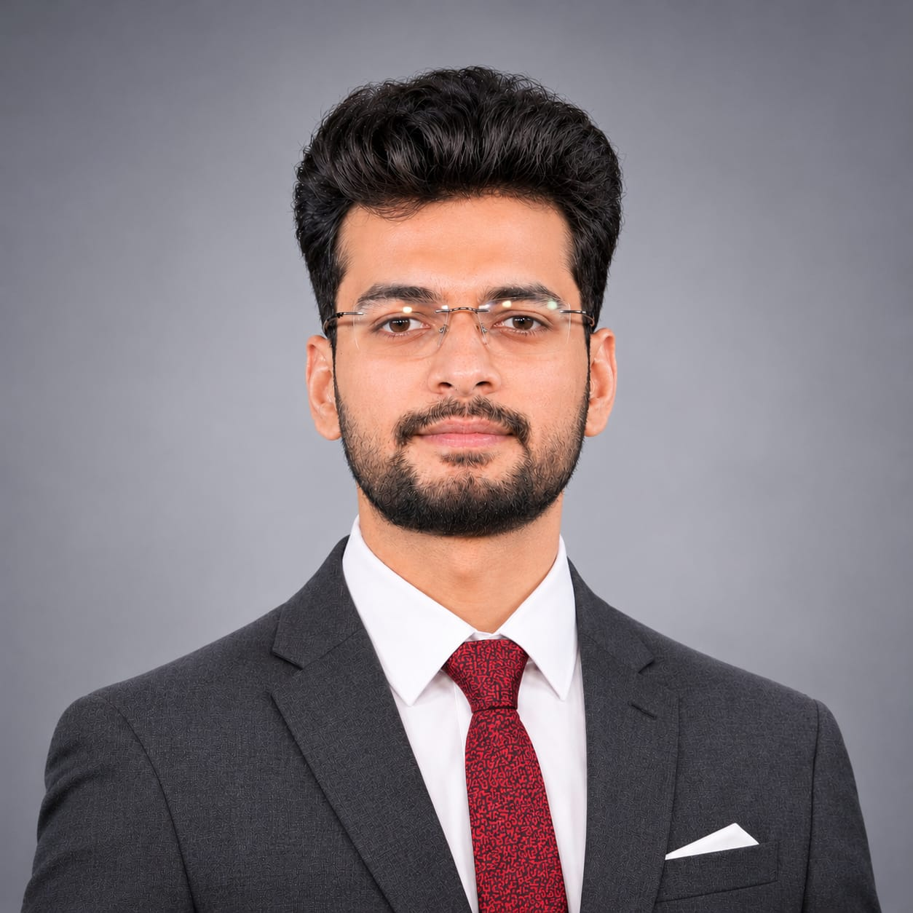
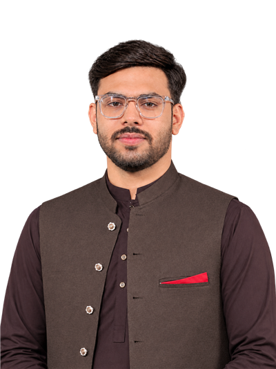

Our Team
Faculty of Computing and Innovation
Riphah International University, Sahiwal Campus

Mr. Muhammad Hassaan Ashraf Muhammad Usman Siddique
Muhammad Usman Siddique- Muhammad Mahad Akabr

Mirza Muhammad Waris Ali

Lahore-Multan Road Near Pakpattan Bypass, Sahiwal, 57000
How to study with the portal
- Choose your paper
- Practise with 20, 50 or 100 questions. A combined paper covers ten subjects using the blueprint on the portal homepage.
- Focus on a subject
- Select one subject for a focused session, or combine several. Their blueprint weights determine their relative shares of your paper, rounded to whole questions.
- Choose when to see answers
- In guided practice, each answer locks when submitted and feedback appears immediately. In exam mode, finish the paper before reviewing your answers. Your history keeps completed results together.